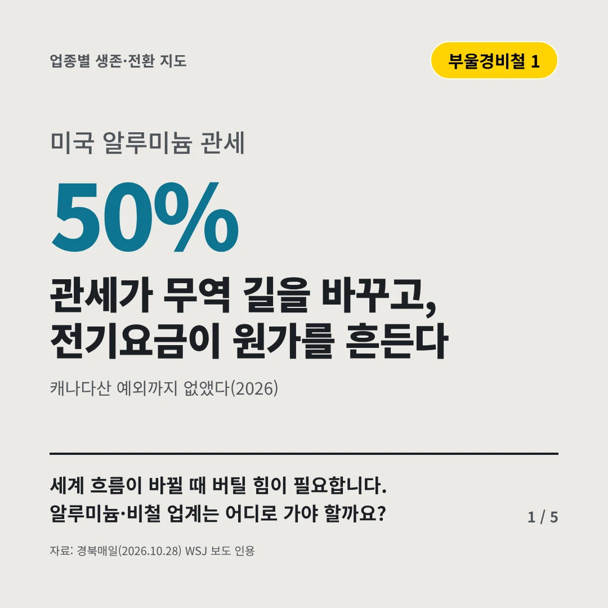
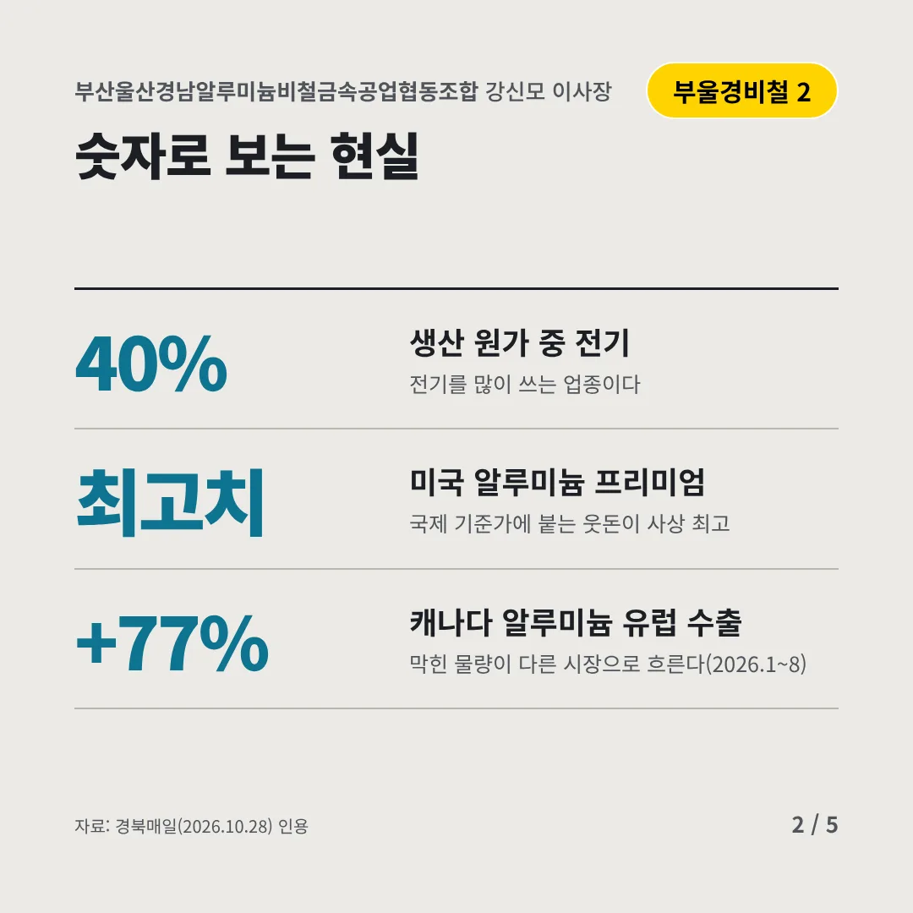
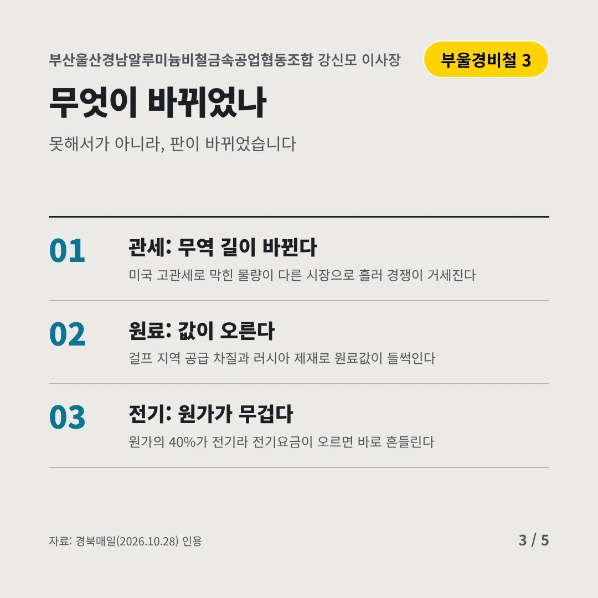
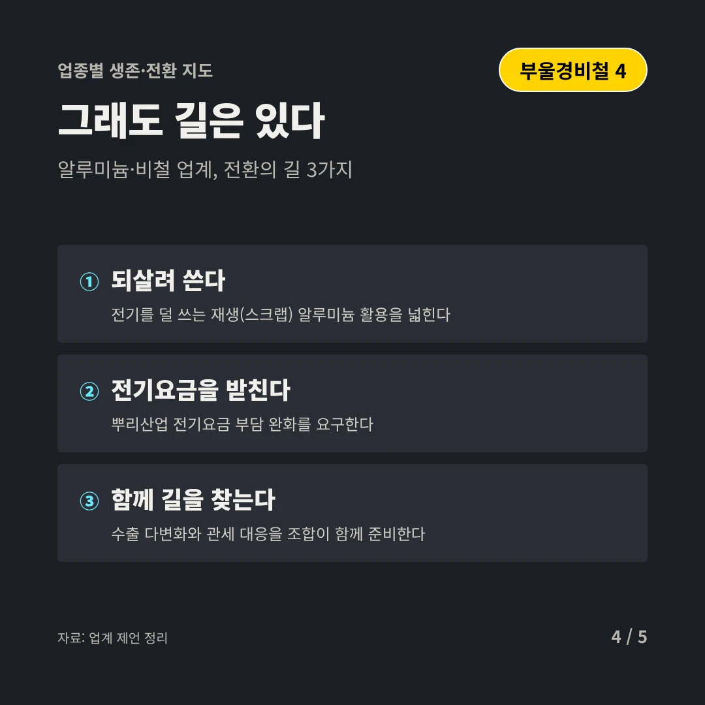
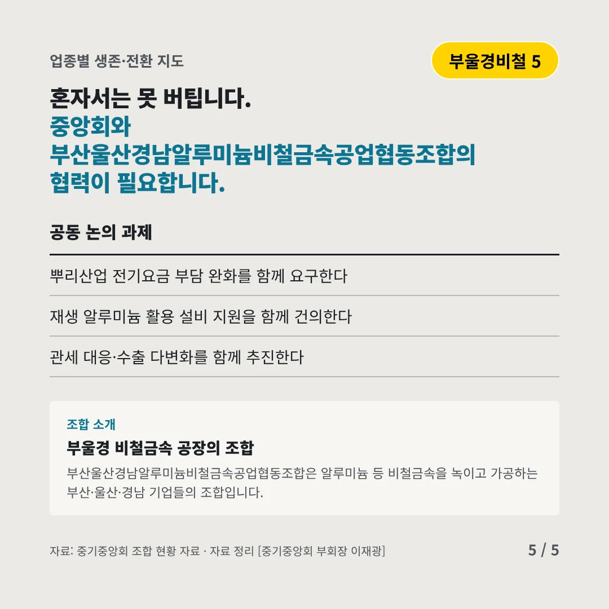
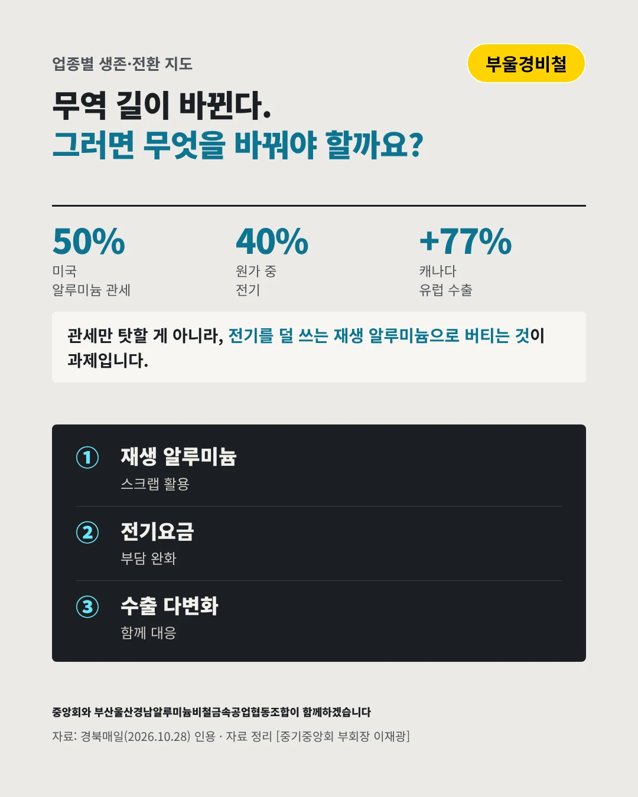

부산울산경남알루미늄비철금속공업협동조합
관세가 무역 길을 바꾸고, 전기요금이 원가를 흔든다
50% 미국 알루미늄 관세






세계 흐름이 바뀔 때 버틸 힘이 필요합니다. 알루미늄·비철 업계는 어디로 가야 할까요?
숫자로 보는 현실
- 40%생산 원가 중 전기전기를 많이 쓰는 업종이다
- 최고치미국 알루미늄 프리미엄국제 기준가에 붙는 웃돈이 사상 최고
- +77%캐나다 알루미늄 유럽 수출막힌 물량이 다른 시장으로 흐른다(2026.1~8)
무엇이 바뀌었나
- 관세: 무역 길이 바뀐다미국 고관세로 막힌 물량이 다른 시장으로 흘러 경쟁이 거세진다
- 원료: 값이 오른다걸프 지역 공급 차질과 러시아 제재로 원료값이 들썩인다
- 전기: 원가가 무겁다원가의 40%가 전기라 전기요금이 오르면 바로 흔들린다
그래도 길은 있다
- 되살려 쓴다전기를 덜 쓰는 재생(스크랩) 알루미늄 활용을 넓힌다
- 전기요금을 받친다뿌리산업 전기요금 부담 완화를 요구한다
- 함께 길을 찾는다수출 다변화와 관세 대응을 조합이 함께 준비한다
한 장 요약

조합 소개
부산울산경남알루미늄비철금속공업협동조합은 알루미늄 등 비철금속을 녹이고 가공하는 부산·울산·경남 기업들의 조합입니다.
자료: 경북매일(2026.10.28)